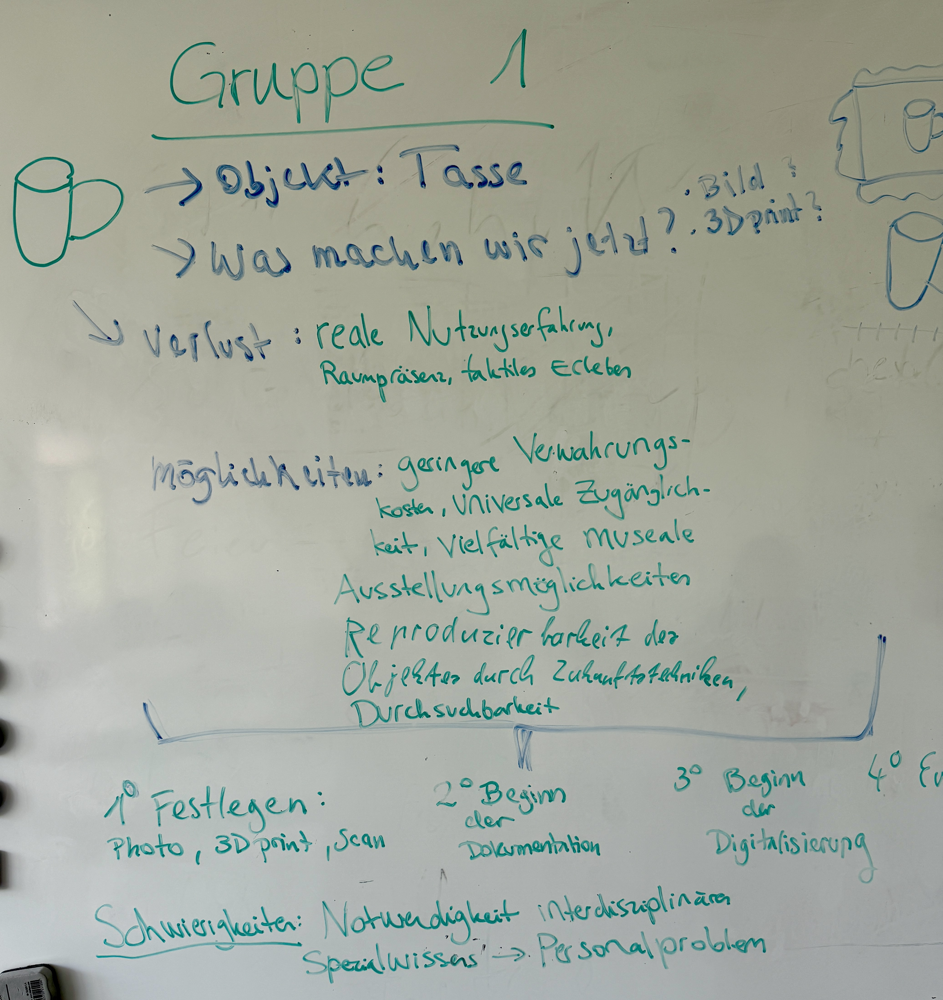
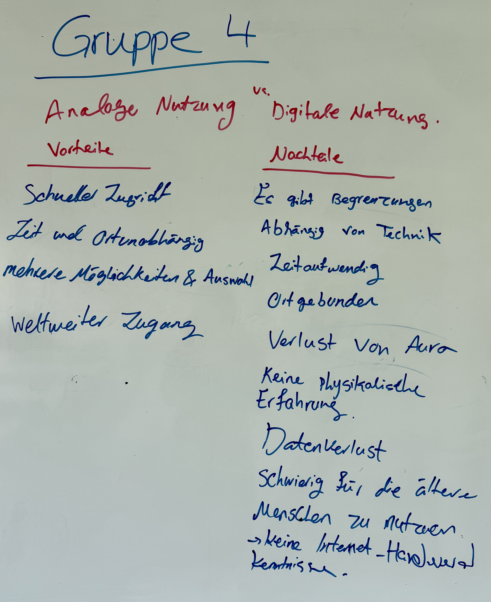
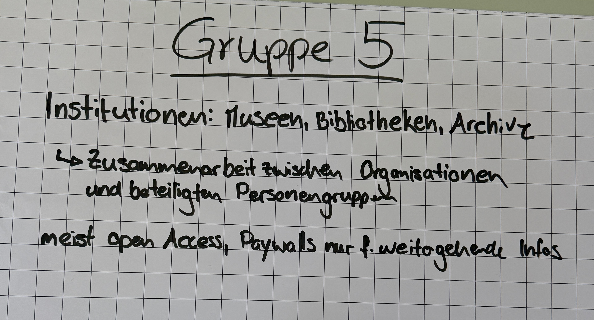

Sitzung 1: Grundlagen digitaler Sammlungen
1. Transformation eines analogen Objekts
Bei der Digitalisierung wird ein analoges Objekt in eine digitale Datei umgewandelt. Beispiele hierfür sind Bücher, Texte, Bilder, Gemälde, Museumsobjekte sowie Audio- und Videoaufnahmen. Für die Digitalisierung können verschiedene Verfahren wie Fotografie, Scannen, OCR, 3D-Scans sowie Audio- und Videoaufnahmen eingesetzt werden. Dabei müssen technische Entscheidungen, beispielsweise zur Auflösung, Qualität und zum Dateiformat, getroffen werden. Im Unterricht wurde eine Tasse als Beispiel gewählt. Sie kann durch Fotografieren, Scannen oder einen 3D-Scan digitalisiert werden. Während der Digitalisierung gehen Eigenschaften wie das haptische Erlebnis, die räumliche Präsenz und die reale Nutzungserfahrung verloren. Gleichzeitig entstehen neue Möglichkeiten, beispielsweise:
- eine weltweite Zugänglichkeit
- geringere Aufbewahrungskosten
- verschiedene Präsentationsformen in Museen
- eine bessere Durchsuchbarkeit
- die Möglichkeit, Objekte mit zukünftigen Technologien zu reproduzieren.
2. Metadaten und Erschließung
Metadaten sind Informationen über digitale Daten oder Objekte. Sie
helfen dabei, digitale Inhalte zu beschreiben, zu organisieren und
leichter wiederzufinden. Metadaten haben vier Kategorien:
Strukturmetadaten beschreiben den Aufbau eines Objekts,
Inhaltsmetadaten beschreiben den Inhalt, Kontextmetadaten liefern
Informationen wie Autor, Ort oder Datum und formale Metadaten
enthalten technische Angaben wie Dateiname oder Dateityp. Damit
Metadaten einheitlich und korrekt verwendet werden, gibt es
Metadatenstandards, Normdaten und Thesauri. Sie verbessern die
Suche und sorgen für eine einheitliche Beschreibung von
Informationen. Beispiele für Metadaten sind Dateiname, Dateityp,
Auflösung, Farbraum, Bitrate, Zeitstempel, Urheber und
Nutzungsrechte. Gute Metadaten helfen dabei, digitale Objekte
schneller zu finden. Da Metadaten von Menschen erstellt werden,
können jedoch Fehler entstehen oder manche Informationen fehlen.
Dadurch können auch Bias oder unterschiedliche Sichtweisen
entstehen, sodass verschiedene Personen dasselbe Objekt
unterschiedlich beschreiben können. Außerdem benötigen
verschiedene Medien wie Bücher, Bilder oder Audio- und
Videoaufnahmen unterschiedliche Metadaten.
3. Digitale Repräsentation von Kontext und Interpretation
Ein digitales Objekt braucht nicht nur eine Datei und Metadaten. Auch Kontext und Interpretationen sind wichtig, weil sie helfen, ein Objekt besser zu verstehen. Dafür gibt es verschiedene Methoden, die jeweils Vor- und Nachteile haben.
Beschreibungstexte: Ein Objekt kann mit Freitext beschrieben werden. Freitext bietet mehr Platz für Erklärungen und verschiedene Meinungen, aber verschiedene Personen können das Objekt unterschiedlich beschreiben. Kontrollierte Vokabulare machen die Suche einfacher, bieten aber weniger Freiheit bei der Beschreibung.
Verlinkungen zu anderen Objekten: Mit Linked Open Data oder Ontologien kann ein Objekt mit Personen, Orten, Ereignissen oder anderen Objekten verbunden werden. Dadurch wird der Zusammenhang besser sichtbar. Diese Methode funktioniert aber nur gut, wenn die Daten richtig und vollständig sind.
Persistente Identifier: ORCID identifiziert Forschende eindeutig und DOI gibt digitalen Objekten eine dauerhafte Kennung. Dadurch können Personen und digitale Objekte auch später leicht gefunden werden. Digitale Systeme können mehrere Interpretationen zu einem Objekt speichern und darstellen. Manchmal widersprechen sich diese Interpretationen. Sie müssen aber nicht gelöscht werden. Stattdessen können sie zusammen gespeichert werden, wenn klar ist, wer die jeweilige Interpretation geschrieben hat.
4. Veröffentlichung, Nutzung und Nachhaltigkeit
Die Digitalisierung verändert die Nutzung von Sammlungen. Digitale
Sammlungen können von Studierenden, Forschenden und vielen anderen
Menschen genutzt werden. Für manche Personen, zum Beispiel ältere
Menschen oder Menschen ohne Internetzugang, ist die Nutzung jedoch
schwieriger.
Die digitale Nutzung hat Vorteile (schneller Zugriff,
zeit- und ortsunabhängiger Zugang, weltweiter Zugang und mehr
Nutzungsmöglichkeiten) und Nachteile (Verlust der Aura, keine
physische Erfahrung, Abhängigkeit von Technik und möglicher
Datenverlust). Deshalb sind Datensicherung und
Langzeitarchivierung wichtig. So können digitale Objekte auch in
Zukunft genutzt werden, selbst wenn sich Hardware, Software,
Betriebssysteme oder Dateiformate ändern.
5. Auswirkungen auf Institutionen
Die Digitalisierung verändert Museen, Bibliotheken und Archive.
Arbeitsprozesse werden digital, verschiedene Fachbereiche arbeiten
enger zusammen und die Rollen der Mitarbeitenden verändern sich.
IT- und Data Specialists werden dabei immer wichtiger.
Viele Institutionen bieten heute Open Access an, damit mehr Menschen auf
Informationen zugreifen können. Für einige Inhalte gibt es jedoch
Paywalls.
Dadurch wird der Zugang einfacher, aber die Digitalisierung braucht auch Zeit, Geld und gut ausgebildetes
Personal. In Zukunft werden Institutionen nicht nur Orte für Kultur sein, sondern immer mehr zu digitalen
Datenplattformen werden.
Fazit
Durch dieses Kapitel habe ich verstanden, dass Digitalisierung mehr bedeutet als nur das Erstellen einer digitalen Datei. Metadaten, Kontext und der langfristige Erhalt digitaler Objekte sind genauso wichtig, damit Informationen auch in Zukunft richtig genutzt und verstanden werden können.
Material aus der Sitzung




